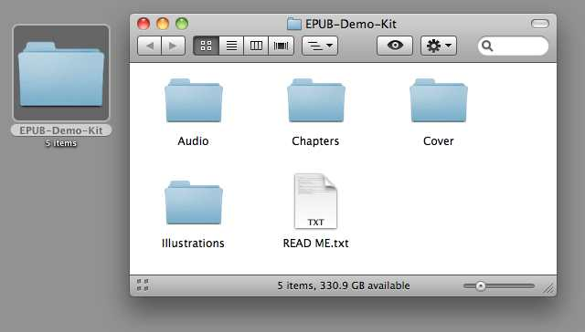
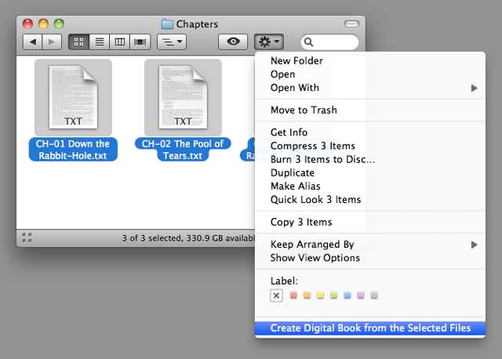
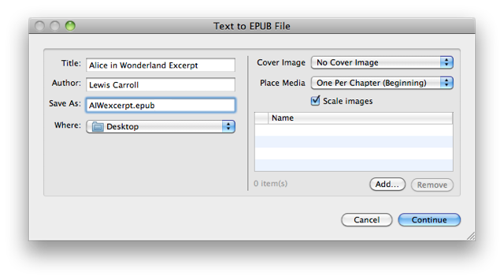
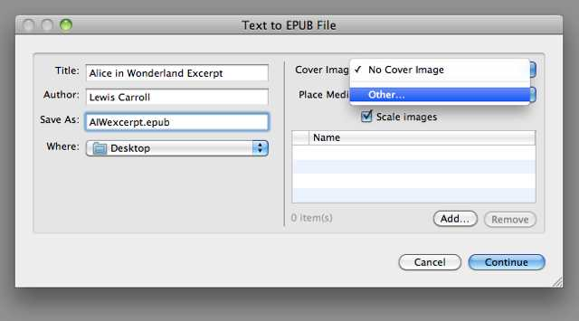
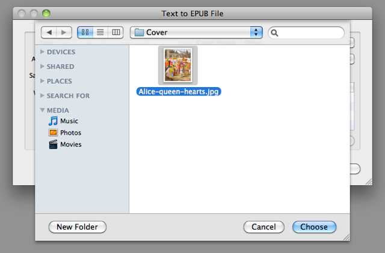
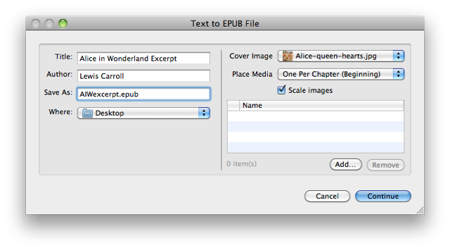
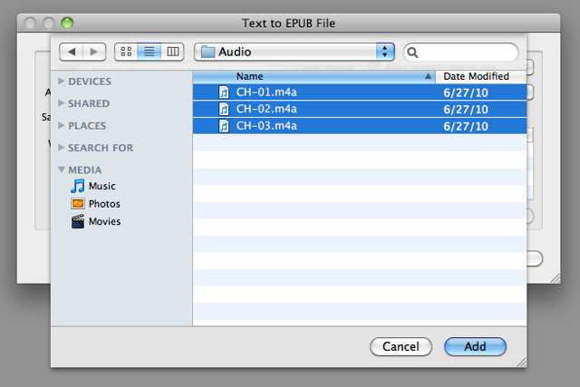
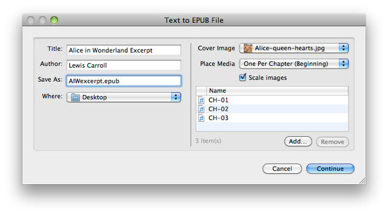
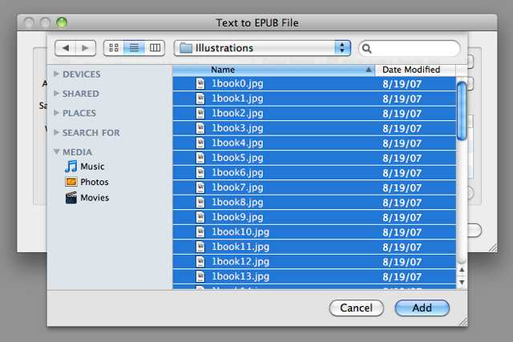

The EPUB Demo Kit and Tutorial
To demonstrate how to use the EPUB service, a demo kit has been provided, containing materials to enable the creation of many variations of digital publications.
The minimum requirement for creating an EPUB book with this service is the text for the book, passed to the service as either as text selected in a document, or as text files that will become individual chapters in the digital book. Images, audio and/or video clips, are optional media that can be added to a book using the service's interface when the service workflow is run.
The digital publication created by the following tutorial, is one that includes optional media, namely spoken narration audio clips (provided by Librivox) placed at the beginning of each chapter, and a collection of images from the original Alice in Wonderland book placed in an illustrations chapter at the end of the book. In addition, the digital book is assigned a cover image that will appear as the book's cover in the iBooks library.
You can download the completed example EPUB document, or begin the tutorial by downloading the demo kit and open it on your desktop:
Before you begin, if you haven't already, install the services used in this tutorial.

The demo kit contains three chapters, as text files (.txt), from Alice in Wonderland; a cover image (.jpg); the three audio narration files (.m4a), and the original book illustrations (.jpg). [NOTE: audio files to be included in an EPUB document must be saved in MPEG (.m4a) format. Video files must be saved in MPEG (.m4v) format. The EPUB service installers include extra services for performing desktop encoding of audio and video files in preparation for inclusion in EPUB documents.]
Open the folder named "Chapters," select the three text files, and then choose the "Create Digital Book from the Selected Files" service from the Finder action menu:

The "Text to EPUB" dialog will appear. The dialog is the view for the Automator action that does the work of creating the publication. The left side of the dialog is for entering information about the publication and determining the name and location for the created EPUB document. The right side of the dialog is for identifying any optional media you wish to add to the publication.
Enter a title for the example publication, the author’s name, and a name for the EPUB document. Be sure to end the EPUB file name with the name extension: .epub

Next, add the cover image by selecting "Other…" from the cover image popup menu on the right side of the dialog:

In the choose dialog sheet, navigate to the Cover folder in the Demo Kit and select the cover image:

Click the Choose button to add the cover image.
Next, you'll add add the audio clips to the book. By default, one media item (image, audio file, or video file) will be inserted at the beginning (or end) of each chapter. Since there are three chapters, we'll add three corresponding audio files, which will be inserted one per chapter. Click the "Add…" beneath the media list area to summon a dialog for selecting media files:

Navigate to the Audio folder, and select the three audio clips:

Click the "Add" button to add the selected audio clips to the media list:

Next, we’ll add the illustrations to the media list. By default, the action will place any media not assigned to a chapter, in a chapter at the end of the book named "Illustrations." Click the "Add…" beneath the media list to summon the picker dialog, then navigate the the Illustrations folder in the demo kit, select all the illustration images, and Click the "Add" button:

All the book components have beed identified and the book is ready to be constructed. Click the "Continue" button to begin the construction of the digital book.
A temporary folder containing the components of the book will be created in the indicated destination folder. Once the processing of the book items has completed, the folder will be converted into an EPUB document, which is ready to be added to iTunes and then transfered to your iPad.
The Book on the iPad
The following images show how the completed EPUB document looks when transfered to the iPad and viewed in iBooks.
The book cover on the iBooks library shelf (left):
The Table of Contents. [Note that the names of the source text files are used as the names of the book chapters]:

The narration audio clip placed at the beginning of the first chapter:

Facing pages displaying two of the illustrations: